Tools of the Trade
While it is true that you can paint by utilizing a wall of your cave as a canvas and mud combined with blood or ashes on your finger, it is undoubtedly simpler to use modern tools. Or even to make things a little bit smoother for yourself.
As Vilppu once said: "There are no rules, only tools."
{kind=link}
Hardware: Accessories
{kind=link}
Paper Models of primitive 3D shapes are best used for feeling the form or to bash your head with when things go wrong. You can see contour lines and perspective rules with your own eyes. These are deceptively simple yet helpful for the beginner. Craft them yourself: use toilet paper roll for a cylinder and a sheet of cardboard paper for a cube (9cm side will fit nicely into A3 paper). Make sure to properly bend the sides otherwise the cube will end up with "round" walls like mine did.
{kind=link}
Wooden Mannequin for hardcore figure drawing. To properly learn how to draw people, almost everybody recommends to learn how to simplify human figure into basic geometrical shapes like this. These cheap, basic poseable wood manikin figures can make the learning easier. They are surprisingly cheap (i got mine for 11€ per figure), large and you can easily use them as home decoration once you no longer need them.
{kind=link}
{kind=link}
Of course if you want to break a bank then go for the more expensive ones. They are probably more usable.
{kind=link}
Drawing Gloves keep your hand warm during harsh cold winters, reduce friction between tablet and your hand and during hot summer sap away sweat which would otherwise hopelessly glue your hand to canvas. The only downside is that if anyone sees you using these, your social credit score will plummel down. Oh well, art demands sacrifices!
{kind=link}
Sticky Notes. Whatever isn't in the head is in the legs (or on the sticky note glued to your monitor; a proverb). This mighty technology is found in literally every single corporate office. But do you have it in your home? I use it to write keyboard shortcuts in order to hopefully increase productivity over time. Is it working? No measurable results yet.
{kind=link}
Pen Gripper. After a first few months of drawing i noticed my hand is gaining permanent damage to the nerves in the wrist. The only symptom was dull ache while sleeping. To instantly solve the issue i started using a gripper. And in two weeks the pain in hand went away despite me never stopping drawing or changing ergonomics. This piece of rubber forces your hand to hold the pen under correct angle and as such it protects your own hand.
Nowadays i dont use it since i learned how to draw more relaxed and how to adjust pressure curve in the drawing software so i dont have to push as much to get thick line.
{kind=link}
Nail file or Sandpaper. The more you draw the more "dull" the nibs in your stylus get. This makes it more awkward to draw. And it gets even worse: the dull nib typically produces very sharp edge which can strach your tablet. This is how i managed to destroy my first tablet surface.
With simple polish using these you can give your nibs second life and make them smooth and tip round again! And as a bonus you protect surface of your tablet.
{kind=link}
Optical Discs are mostly known as Blu-ray, DVD or CD. To use it, simply put them (or something perfectly round) on the tablet and trace it. If it won't produce perfect circle in your drawing app then you have a problem. It took me 3 weeks of drawing before i noticed that my tablet is skewing proportions. To solve this issue you either want to calibrate your tablet and or go into settings of the drivers and enforce correct aspect ratio so both your tablet and your monitor use the same.
Hardware: Tablets
There are thousands of tablets and dozens of brands available on the market. Don’t ask me which one is the best because no one can answer that question. At most i can point you towards certain brands people universally praise like HUION or XPPen, and shy you away from brands like Apple and Wacom due to software issues and inflated prices.
The most important aspect of choosing tablet is the size. If the tablet is tiny you will struggle to draw long clean lines and most likely get hand cramps very quickly due to overusing wrist. Do not go bellow size of A4 (210×297mm, 8.3×11.7in). There is a good reason why every book and paper you come across is size of A4. Bigger is better. Always.
In terms of screen or no screen, you want the screen-less option. They are way cheaper, universal (can connect it to PC or smartphone), more ergonomical, they dont overheat or have batteries you need to take care of and dont limit your selection of software. The only disadvantage is that you cannot draw in bed or outside with them. But do you even need to draw in your bed?
Last feature, which is nice to have, are buttons on the tablet. The real physical buttons you can feel by touch and make click noise. Sure, most profesional drawers have 1 hand rested on keyboard and second holds the stylus, but you won't become pro overnight. Dedicating button on tablet for undo, switching between eraser and brush or button to increase thickness of brush are very handy.
{kind=link}
XP-Pen Star G960S was my first tablet ever. Costed me grand 40€. At the time i didn't really know if i will even like drawing so i went for cheapest model with medium size. The stylus was so thin i had to upgrade it with pen gripper. It lasted me 6 months of intense beginner drawing before i upgraded. The major reason for upgrade were the deep scratches which interfered with drawing clean lines.
It was okay tablet, but i wouldn't recommend it in current year.
{kind=link}
XP-Pen Deco L is my second and current tablet. It is direct upgrade of the old one in every aspect. Stylus is thicker so it is easier to hold and it has tilt detection. Its tip is way more sensitive. There are more buttons. Same drawing area. It has minimalistic design with rounded edges covered in rubberized plastic to keep edges smooth towards your hand while keeping it from sliding on table.
{kind=link}
The 80€ pricetag isn't the cheapest, but it is fair for the overall quality. I can recommend this one to anyone. PRO or BEG, this will get the job done.
{kind=link}
After a year of drawing i managed to punch holes and scratches into my second tablet as well. At this point they either design the surface of the tablet to die over time as planned obsolescence or it is the inevitable consequence of stress in materials applied by friction.
In either case i managed to pick up on deep sale protective PanzerGlass for Samsung Galaxy Tab S7 for mere 2€. It is not a perfect fit, but good enough. If you will be buying yours, double check the dimensions of glass are smaller than the tablet. It is not possible to cut glass without it cracking. The drawing on glass feels somehow even better than the original. And while the holes are still visible under the glass, i can no longer feel them when drawing!
Software: Utilities
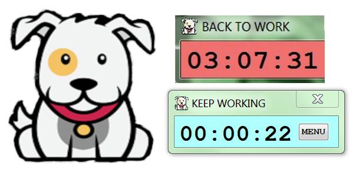
DogWatcher Work Timer Watcher: Simple app which tracks time you spend in up to three different apps. Made in AHK. Ideal to counter procrastination or at the very least: to measure how bad it is.
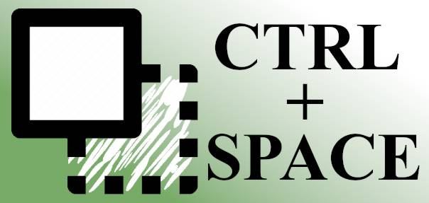
Always on TOP: Simple app which sets up current app window to be always visible. Useful for drawing from reference. Made in AHK. If Windows were better OS then you wouldnt need this app.
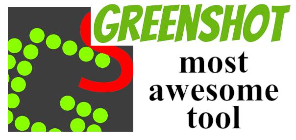
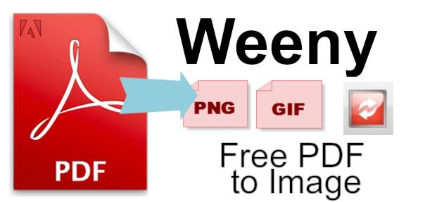
Weeny PDF to Image Converter Simple app to extract images from PDF files (art books) without losing quality in original resolution. If Adobe Reader was better then you wouldnt need this app.
Software: Drawing apps
The main thing which makes the magic happen! This isnt complete list of all drawing apps. It is just my personal list of apps i (tried to) use for drawing. Sorted chronologically as i used / found them.
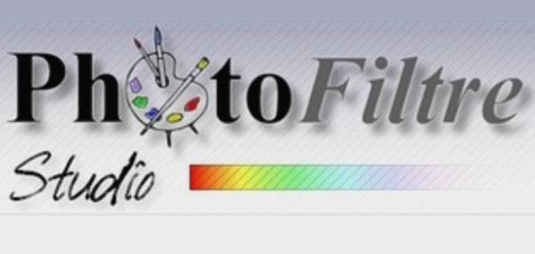
PhotoFiltre Studio: Complete image retouching program. Now this is RETRO. I believe this was my first advanced app for editing images decades ago. Time flies fast i guess.
Dont try to use this in 2030.
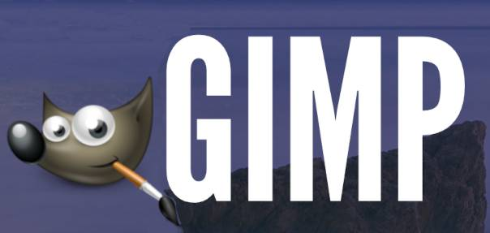
GIMP: GNU Image Manipulation Program. I still use it as my go-to app for editing existing pictures. Compression for web, resizing, quick edits, pixel perfect sizing. The only reason why i used it at start was because i already knew the app prior to drawing.
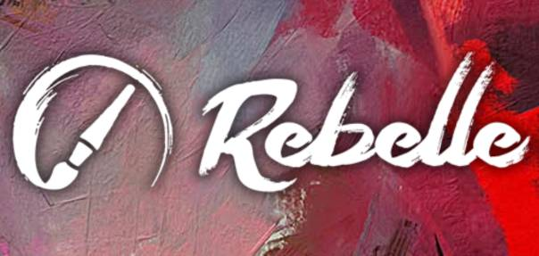
Rebelle: Phenomenal oils and watercolors with traditional pigment color mixing. Amazing app which is as close to trad drawing as possible. It's only drawback is bad performance. Goes very often on sale at places like humblebundle.com
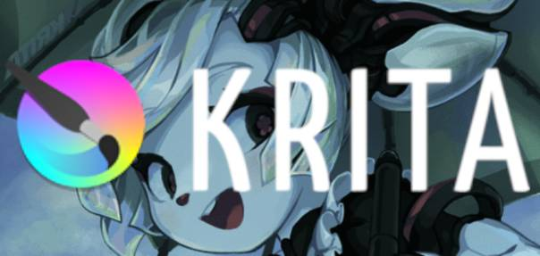
Krita: Professional FREE and open source painting program. This thing has everything you will ever need and much much more. Phenomenal brush engine. Very solid performance. This is at the moment my main drawing app!
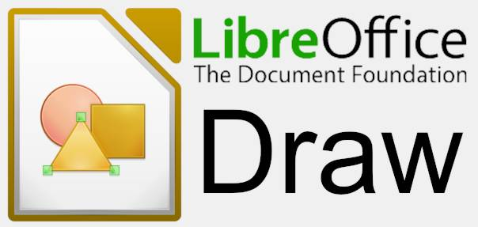
LibreOffice Draw: Eye-popping graphic documents. This isn't exactly drawing app per say, but you would be foolish to ignore it. It is free and can create nice vector graphics with a few mouse clicks. What takes ages to set up in GIMP or Krita can be done in few minutes here.
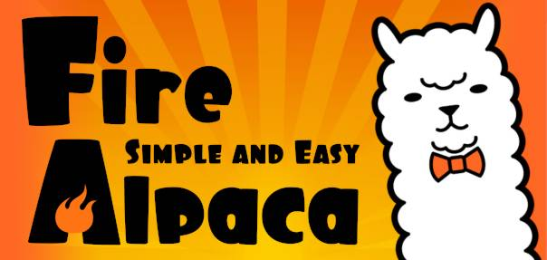
FireAlpaca: Free Digital Painting Software for Mac and Windows. Semi popular drawing app which originates from Japan. Very simple, has brush shop and excellent performance. If you want simple lightweight app, use MediBang.
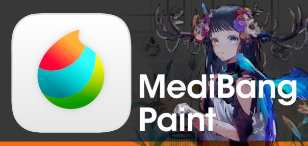
MediBang Paint Pro: Draw Anywhere With Anything. Literally the same app as FireAlpaca, just slightly improved and rebranded. I don't understand why would you release same app twice under two different names. Probably related to Japan customs...
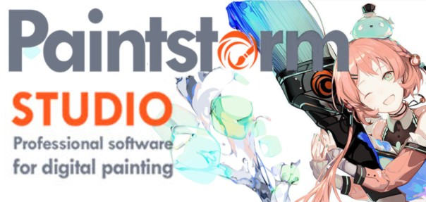
Paintstorm Studio: Professional indispensable tool for artists, created for works of any complexity, genre and technique. High quality brushes, customizeable ui, supporting every platform, reasonable performance and all that just for 20$? Sold!
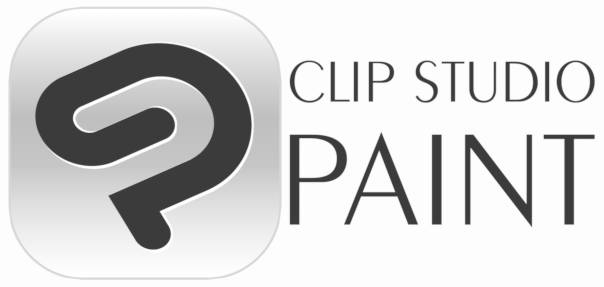
Clip Studio Paint: The artist's app for drawing and painting. Excellent inking brushes, filled with unique features for productivity, support for comics, highly customizeable ui... no wonder whole Japan uses this for animation and manga! Too bad it's performance is trash.
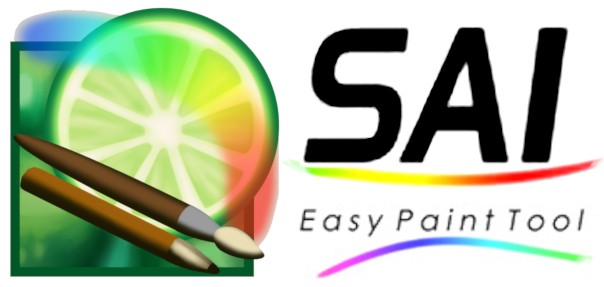
PaintTool SAI: high quality and lightweight painting software. Very simple, yet packed with features. Programmed by a single man from Japan. The fastest drawing app on the market. A bit weaker in UI customization. 5500¥ is cheap (37$).
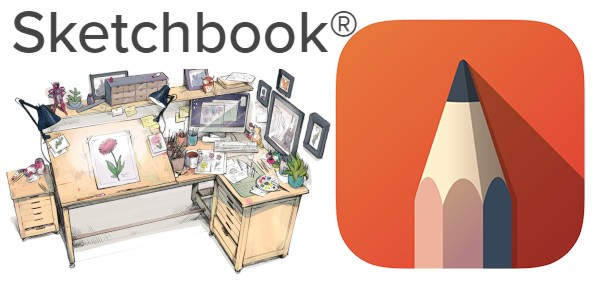
Autodesk Sketchbook: You never know when a great idea will spark, or where it will lead. Cheap, simple app with unique UI focused primarily on using stylus only to navigate all of it's utilities. All default brushes are good. Best for tablets, but works on PC as well.
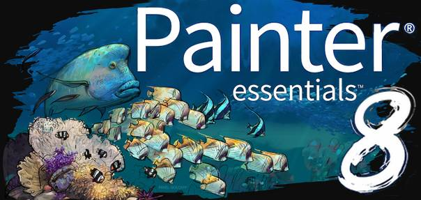
Corel Painter Essentials: Beginner painting software for Windows. Easily the worst drawing software i ever tried. Editing brushes? No, you can only buy new ones. Adjusting keyboard shortcuts? No. This isn't lightweight version of Painter, but torture version!
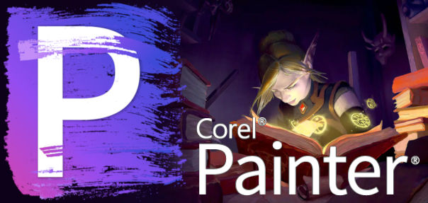
Corel Painter: Professional Digital Art Software for Windows. First app I tried which can dethrone KRITA. Good performance, very good default brushes, good UI. Superb software carrying COREL legacy into 21st century onward. Shame it is so expensive.
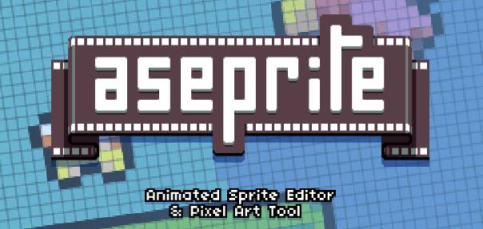
Aseprite: Animated Sprite Editor and Pixel Art Tool. Simple, fast, cheap yet quite powerful tool mainly focusing on pixel art. Good pixel art is simply timeless and this tool has everything you need to make it! There is also free fork version (without tablet support).
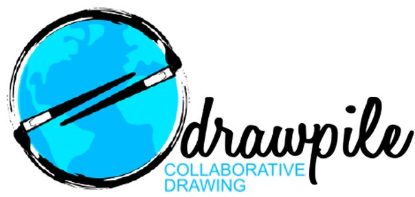
Drawpile: collaborative drawing program that lets multiple people draw, sketch, paint and animate on the same canvas simultaneously. Simple, fast, almost as good as Krita. The killer feature is the built-in collaboration and chat. You DO have draw friends, don't you?
ArtRage: Paint and draw with natural tools on your computer. Cheaper app for all platforms which tries to simulate traditional media, mostly painting. It focuses mostly on intuitive controls centered about stylus. Feels nice to use, but doesn't beat Rebelle.
Trad: Canvas
Since 2024, I have decided to try out some traditional drawing as well. It comes with its own advantages, quirks, and drawbacks. So far, I quite like it. One of the first steps was to search my home for any old supplies; I have found too many of them.
{kind=link}
In terms of paper, I have found and assembled an approximately 18 40-cm-tall pile of A4 sheets and about 50 pieces of A3 sheets. Some of these papers are older than me and yellowed; others are only 15 years old and as white as ever. The paper quality is a broad range, from luxury modern-coated glossy thick papers to thin, ancient yellowed papers of unknown origin or purpure.
- 250 g/m² drawing cardboard or cardstock
- 235 g/m² luxury glossy photo paper for ink printers
- 180 g/m² drawing carton or sketchbook
- 170 g/m² drawing pad
- 100 g/m² blotting paper
- 90 g/m² colored paper
- 80 g/m² "normal" office printer paper
- 70 g/m² exercise book paper
- 60 g/m² recycled exercise book paper
- 40 g/m² see through tracing paper
- 25 g/m² ultra thin onion skin paper
{kind=link}
And after a short test, I have concluded that there are roughly only 3 types of paper, and any type of paper you can come across will fall into one of these categories:
Tracing paper 20~40 g/m²
Also known as onion skin paper. Very thin paper with a very smooth surface. Typically, it is a light yellow color. So thin, you can see through it. Before the age of computers, this was the paper all professionals (architects, engineers, archives, and illustrators) used. It's best strength is how easy it is to store it; even thousands of sheets won't take up much space and will weigh next to nothing. Great for inking. Usable for pencils.
{kind=link}
Printer paper 80 g/m²
The most common type of paper in 2030. It is everywhere. It is very white. It can be of archival quality. It takes ink and dry media well. It has a slight, smooth texture, ensuring great absorbtion of anything you throw at it while preventing bleeding. And it is cheap. It is cheaper than any other type of paper. Even cheaper than the supposedly cheapest type of paper called newsprint. Simply because every single corporation on the planet uses this paper. If you do not know and somehow don't have any paper at home, just order something like a pack of a pack of 2500 sheets for 30€ from your local electronic store (office or printer accessories), and you are ready to draw!
The only downside is that the most common grades (80 g/m²) are too thin to use both sides for drawing because the ink can seep through and the pencil will carve through. And the thicker versions (100 g/m²) don't make sense from an economical standpoint: it is cheaper to buy two thin sheets instead of one thicker sheet. Great for pencil and ink. It is usable for painting if you tape it down to a solid surface.
{kind=link}
Artist paper 170~300 g/m²
The last category is the most luxurious type of paper. It goes by so many different names, like cardstock, cardboard, drawing carton, drawing pad, and sketchbook, and some people even call it after the names of the original company that made it first, like Bristol. This paper is so thick, you don't need to put anything under it while drawing. Your eraser won't chew a hole in it, no matter what, and the ink or paint will never seep through. It is the best type of paper there is for any traditional medium.
Some of these come with a rough texture, aimed at dry media usage like pencils or charcoal; some come with a very smooth or even glossy coating for absolute precision during inking; and some are made from special fibers that can soak and hold a lot of water and pigments without losing durability or quality. Pick the one that aligns with your intended medium while not breaking your budget.
The downsides are obvious: unreasonable prices (anything with name art is sold at a premium because typical artists are bad at math), and any stack of these will very quickly become too tall to fit into your drawer and too heavy to carry around easily. In my humble opinion, anything above 200 g/m² is overkill for your drawing and painting needs.
Trad: Drawing Tools
{kind=link}
There were a lot of various trade supplies in our family house prior to my getting into drawing. All I had to do was plunder the attic and basement and dig them all out. Some of these are older than me, and some of these are my ex-school supplies. The current collection is made of a variety of colored pencils and ballpoint pens. Occasionally, there are markers that did not dry out and a few fountain pens.
{kind=link}
A lot of pencils were hopelessly chewed, glued together, and broken. Despite me binning all the dried-out, depleted, and broken pens, markers, and pencils, there is still enough of it to last me at least a decade. Among the more exotic tools, please notice there is a full set of Faber-Castell TG1-S technical ink pens for technical drawing (needed for passing a high school class called Descriptive geometry) and old Hero pens, both fountain pen and ballpoint pen versions, left by my ancestors. They are at least 50 years old now.
{kind=link}
Since there were art classes in primary school, I have naturally discovered some of my old painting supplies as well. To my surprise, the temperas (similar to gouache) did not dry out. There is also a whole set of oil painting colors, some charcoal, a whole set of colored conte chalks, brand new sets of watercolors, and unopened sets of brushes. All I am missing for claiming title painter is an easel and talent.
Honorable Mentions
Listing every single traditional drawing tool I currently have in my art basement, or even just the ones I've tried out, would be a pointless endeavor. Most of these tools are no longer in production and are often disposable. Instead, I will focus on the ones that have caught my attention due to their quality and practicality.
{kind=link}
Lead Holder (2mm) also known as a mechanical pencil, automatic pencil, or micropencil. Normal pencils suffer from small annoyances like needing sharpeners, leaving wooden dust behind, breaking, or getting comically short after a certain number of sharpenings. Versatile has none of these problems, and unlike the wooden counter parts, this one is refillable; it stays with you your whole drawing career. My model is Hardtmuth Technicolor Lead Holder Versatil 5217/5 in black color. It is fully made from steel, and i am certain it will outlive me. Similar models are still sold to this day.
{kind=link}
Rollerball Pen also known as ceramic pens, are sometimes mistaken for gel pens. Both fountain pens and ballpoint pens have painful downsides, such as leaking ink or leaving blobs behind. Rollerballs offer the best of both worlds: they are easy to use, indestructible, never dry out or leak, and are as reliable as ballpoint pens. And at the same time, you can refill them with any ink color you want, and they glide over paper as effortlessly as fountain pens. My model is a Schneider Cartrige Rollerball Pen and if the grip were not coated in rubberized plastic (it turns over time into mush), I would guess this pen is everlasting. Similar models exist under every single pen company these days. Just be sure you buy an actual refillable model with an international cartridge instead of their expensive proprietary versions.
Trad: Utilities
{kind=link}
Just as digital art needs software, which is not directly related to drawing, so does traditional drawing. In this case, a lamp. In the digital world, the monitor gives you all the light you need. In real life, I quickly found out my two ordinary 4W LEDs with 2700K were too yellow for scanning my canvas and too dim to actually see what I was drawing during the evenings.
So I got a lamp, put in the whitest (4000k) LED I found at home, and to diffuse the light evenly, I wrapped the lamp around in half-see-through punched pockets, also known as plastic wallets or protective plastic sheets. Diffusing the light is very important, both for your eyes so you don't get blinded every time you look in the direction of the lamp and for scanning the canvas without making glare spots.
{kind=link}
Any competent illustrator will tell you to never draw on a stiff surface like a table. Instead, put a couple of sheets between the table and the canvas, so the pencil can smoothly yet firmly glide over the surface. An old book works perfectly as a drawing pad. This one is perfect: not too thin or thick and slightly bigger than A4 format, so I get both a good drawing surface and a surface to rest my hand on. It is The little yellow train by Hayden McAllister.
There is a story related to this book: back in primary school, we had to keep reading journals, and the quota was insanely high: one book per month! And one day, when I was so behind schedule, I picked this book with a simple idea: read it whole and write a report in less than 5 hours. The teacher told me she expects me to read a bit more worthy literature, but let me pass with it.